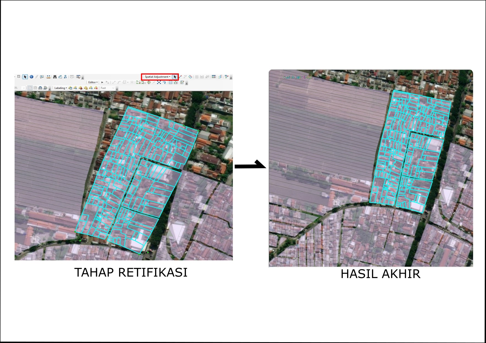
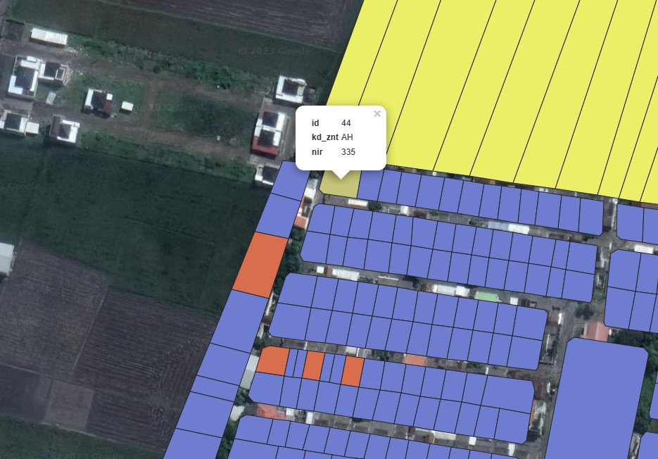
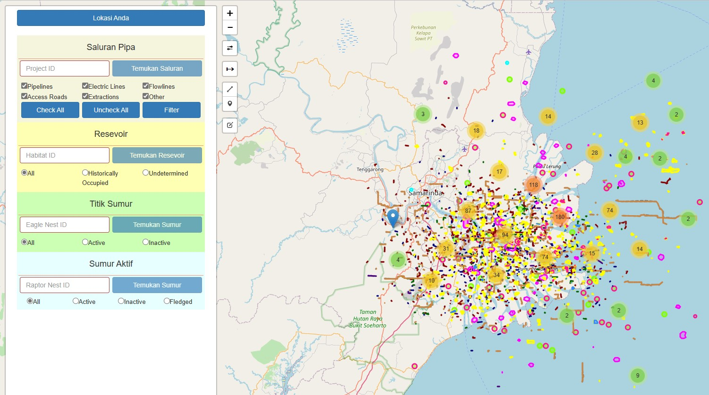
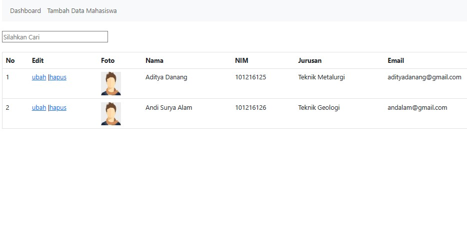

Hasil Perkerjaan
- Retifikasi Polygon PBB Berdasarkan Citra Satelit
- 
Pekerjaan ini dilakukan dengan mengkonversi bidang objek PBB dari format CAD/Mapinfo (undefined coordinate system) ke format Shapefile sebanyak 306 file menggunakan QGIS. Dengan bantuan tool Spatial Adjusment yang ada di ArcGIS yang berguna untuk meluruskan dan mengkoreksi posisi bidang objek PBB ke posisi sebenarnya berdasarkan kenampakan bentuk rupa bumi berdasarkan citra satelit.
- Pembuatan Peta Zona ZNT dengan tampilan WebGis
- 
Menggabungkan nilai hasil penilaian zona nilai tanah dengan data shapefile per desa menggunakan QGIS. Kemudian Membuat tampilan data nilai zona tanah secara representatif yang dilengkapi dengan hover text, jika user ingin mengetahui properti di dalam bidang polygon. Hasil akhir akan diletakan pada server agar mudah diakses secara bersamaan oleh banyak user dengan menggunakan IP server.
- Membuat Sistem Analisis Spasial Terintegrasi dengan PostgreSQL

Membuat database yang dilengkapi dengan ekstensi PostGIS yang agar database bisa membaca data yang memiliki geometri kemuudian membuat schema dalam database agar bisa membagi data shapefile desa per-kecamatan. Koneksi dilakukan dengan QGIS agar data shp yang telah terhubung dengan database bisa digunakan untuk dianalisis oleh banyak user. Hasil analisis tersebut juga bisa langsung terupdate secara real time di tampilan WebGIS yang sudah ditetapkan.
- Tampilan dan Analisis Data SIG ke dalam Web dengan Leaflet
- 
Membuat tampilan WebGIS dengan data geojson yang berasal dari sumber open source pada web ini terdapat beberapa menu interaktif berupa tampilan properti data dengan menggunakan perpaduan berbagai ekstensi dari leaflet salah satunya yaitu BindToolTip dan fungsi javascript. Disertai juga adanya menu pecarian properti yang dimiliki data masing masing layer, dan kemudian adanya juga menu edit yang ada di toolbar web yang berfungsi untuk menambahkan objek pada WebGis. Properti dan nama data sengaja ditampilkan dengan properti/nama imaginer agar user memiliki gambaran saat menggunakan web ini. Penyempurnaan web ini masih dalam pengembangan saya yang akan menjurus untuk edit dan penambahan objek titik, garis, dan polygon yang akan terintegrasi dengan database.
- Membuat website sederhana dengan menggunakan PHP dan SQl dasar dilengkapi fitur CRUD
- 
Memiliki tampilan daftar mahasiswa berisi dengan atribut array yang tersimpan di DBMS phpMyAdmin. Selain itu juga adanya fitur CRUD dengan menggunakan PHP dan fitur pencarian menggunakan jQuery